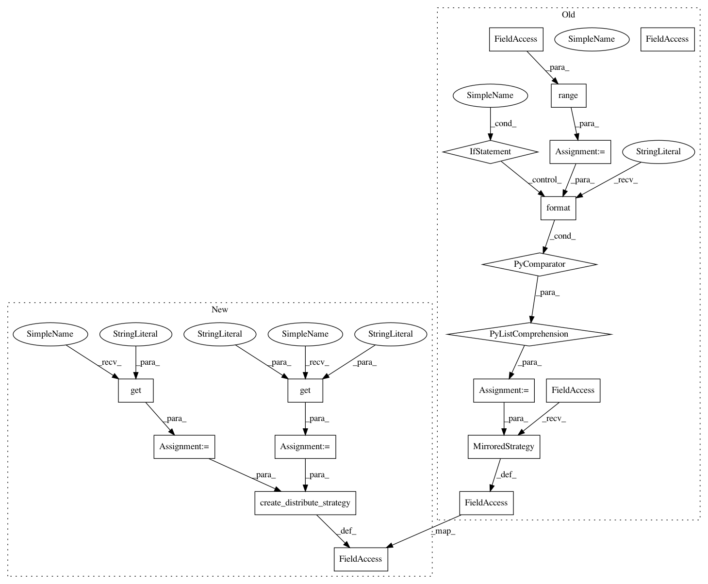

02ef279b852bad53771e02435d0caa0a64d17343,baseline/tf/seq2seq/training/distributed.py,Seq2SeqTrainerDistributedTf,__init__,#Seq2SeqTrainerDistributedTf#Any#,39
Before Change
self.checkpoint_manager = tf.train.CheckpointManager(self._checkpoint,
directory=checkpoint_dir,
max_to_keep=5)
devices = ["/device:GPU:{}".format(i) for i in range(self.gpus)]
self.strategy = tf.distribute.MirroredStrategy(devices)
self.bleu_n_grams = int(kwargs.get("bleu_n_grams", 4))
def checkpoint(self):
This method saves a checkpoint
After Change
self.checkpoint_manager = tf.train.CheckpointManager(self._checkpoint,
directory=checkpoint_dir,
max_to_keep=5)
strategy_type = kwargs.get("strategy_type", "mirror")
gpus = int(kwargs.get("gpus", 1))
endpoint = kwargs.get("endpoint")
self.strategy = create_distribute_strategy(strategy_type, gpus, endpoint)
self.bleu_n_grams = int(kwargs.get("bleu_n_grams", 4))
def checkpoint(self):
This method saves a checkpoint
In pattern: SUPERPATTERN
Frequency: 3
Non-data size: 18
Instances
Project Name: dpressel/mead-baseline
Commit Name: 02ef279b852bad53771e02435d0caa0a64d17343
Time: 2020-09-02
Author: dpressel@gmail.com
File Name: baseline/tf/seq2seq/training/distributed.py
Class Name: Seq2SeqTrainerDistributedTf
Method Name: __init__
Project Name: dpressel/mead-baseline
Commit Name: 02ef279b852bad53771e02435d0caa0a64d17343
Time: 2020-09-02
Author: dpressel@gmail.com
File Name: baseline/tf/classify/training/distributed.py
Class Name: ClassifyTrainerDistributedTf
Method Name: __init__
Project Name: dpressel/mead-baseline
Commit Name: 02ef279b852bad53771e02435d0caa0a64d17343
Time: 2020-09-02
Author: dpressel@gmail.com
File Name: baseline/tf/lm/training/distributed.py
Class Name: LanguageModelTrainerDistributedTf
Method Name: __init__
Project Name: dpressel/mead-baseline
Commit Name: 02ef279b852bad53771e02435d0caa0a64d17343
Time: 2020-09-02
Author: dpressel@gmail.com
File Name: baseline/tf/seq2seq/training/distributed.py
Class Name: Seq2SeqTrainerDistributedTf
Method Name: __init__